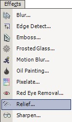

Relief Effect
|  |
The Relief Effect (Effects --> Relief) is used to emphasize the edges of an image. This yields a similar result to edge detect, though the original image is much more visible with this effect.
|
| Original Image | After Relief |
|
|